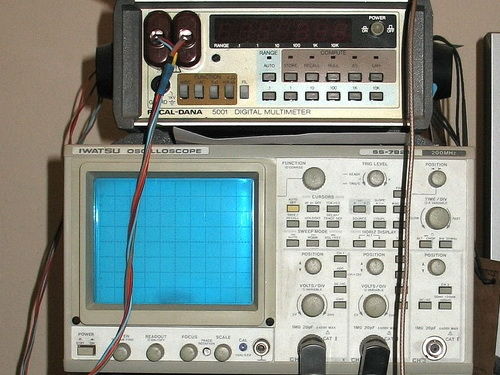

About
Hi! My name is Yuriy.I am hardware engineer with decades of experiences in repairing of high end audio equipment. Development of state of art devices and upgrades for audio is my passion.
Hi! My name is Yuriy.I am hardware engineer with decades of experiences in repairing of high end audio equipment. Development of state of art devices and upgrades for audio is my passion.